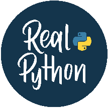

Python is dynamically typed
It’s recommended to use double-quotes for strings
Use None to represent missing or optional values
Use "\n" to create a line break in a string
10 + 3 # 13 10 3 # 7 10 * 3 # 30 10 / 3 # 3.3333333333333335 10 // 3 # 3 10 % 3 # 1 2 ** 3 # 8
Use type() to check object type
To write a backslash in a normal string, write "\\"
Visit realpython.com to turbocharge your Python learning with in-depth tutorials,
Check for a specific type with isinstance() issubclass() checks if a class is a subclass
single = 'Hello' double = "World" multi = """Multiple
type(42) #
line string"""
real-world examples, and expert guidance.
abs(-5) # 5 round(3.7) # 4 round(3.14159, 2) # 3.14 min(3, 1, 2) # 1 max(3, 1, 2) # 3 sum([1, 2, 3]) # 6
greeting = "me" + "ow!" # "meow!" repeat = "Meow!" * 3 # "Meow!Meow!Meow!" length = len("Python") # 6
isinstance(3.14, float) # True issubclass(int, object) # True - everything inherits from object
Follow these guides to kickstart your Python journey:
int("42") # 42 float("3.14") # 3.14 str(42) # "42" bool(1) # True list("abc") # ["a", "b", "c"]
"a".upper() # "A" "A".lower() # "a" " a ".strip() # "a" "abc".replace("bc", "ha") # "aha" "a b".split() # ["a", "b"] "-".join(["a", "b"]) # "a-b"
realpython.com/what-can-i-do-with-python
math ∙ operators ∙ built in functions
realpython.com/installing-python
realpython.com/python-first-steps
Python uses indentation for code blocks
$ python
Use 4 spaces per indentation level If-Elif-Else
data types ∙ type checking ∙ isinstance ∙ issubclass
text = "Python" text[0] # "P" (first) text[-1] # "n" (last) text[1:4] # "yth" (slice) text[:3] # "Pyt" (from start) text[3:] # "hon" (to end) text[::2] # "Pto" (every 2nd) text[::-1] # "nohtyP" (reverse)
>>> exit()
if age < 13:
category = "child" elif age < 20:
Variables are created when first assigned
Use descriptive variable names
category = "teenager" else:
Follow snake_case convention Basic Assignment
$ python my_script.py
category = "adult"
name = "Leo" # String age = 7 # Integer height = 5.6 # Float is_cat = True # Boolean flaws = None # None type
$ python -i my_script.py
# f-strings name = "Aubrey" age = 2 f"Hello, {name}!" # "Hello, Aubrey!" f"{name} is {age} years old" # "Aubrey is 2 years old" f"Debug: {age=}" # "Debug: age=2"
x == y # Equal to x != y # Not equal to x < y # Less than x <= y # Less than or equal x > y # Greater than x >= y # Greater than or equal
interpreter ∙ run a script ∙ command line
# Format method template = "Hello, {name}! You're {age}." template.format(name="Aubrey", age=2) # "Hello, Aubrey! You're 2."
x, y = 10, 20 # Assign multiple values a = b = c = 0 # Give same value to multiple variables
Always add a space after the #
if age >= 18 and has_car: print("Roadtrip!")
Use comments to explain “why” of your code Write Comments
# Normal string with an escaped tab "This is:\tCool." # "This is: Cool."
counter += 1 numbers += [4, 5] permissions |= write
if is_weekend or is_holiday:
print("No work today.") if not is_raining:
# This is a comment # print("This code will not run.") print("This will run.") # Comments are ignored by Python
# Raw string with escape sequences r"This is:\tCool." # "This is:\tCool."
print("You can go outside.")
variables ∙ assignment operator ∙ walrus operator
comment ∙ documentation
strings ∙ string methods ∙ slice notation ∙ raw strings
conditional statements ∙ operators ∙ truthy falsy
Loops range(5) generates 0 through 4
greet() # "Hello!" greet_person("Bartosz") # "Hello, Bartosz" add(5, 3) # 8 add(7) # 17
class Cat: species = "Felis catus" # Class attribute
def validate_age(age): if age < 0:
Use enumerate() to get index and value break exits the loop, continue skips to next
raise ValueError("Age cannot be negative") return age
def __init__(self, name):
self.name = name # Instance attribute def meow(self):
Be careful with while to not create an infinite loop
exceptions ∙ errors ∙ debugging
return f"{self.name} says Meow!"
def get_min_max(numbers): return min(numbers), max(numbers)
# Loop through range for i in range(5): # 0, 1, 2, 3, 4
@classmethod def create_kitten(cls, name):
minimum, maximum = get_min_max([1, 5, 3])
print(i)
return cls(f"Baby {name}")
A collection is any container data structure that stores multiple items
# Loop through collection fruits = ["apple", "banana"] for fruit in fruits: print(fruit)
If an object is a collection, then you can loop through it
Strings are collections, too
callable() # Checks if an object can be called as a function dir() # Lists attributes and methods globals() # Get a dictionary of the current global symbol table hash() # Get the hash value id() # Get the unique identifier locals() # Get a dictionary of the current local symbol table repr() # Get a string representation for debugging
class Animal: def __init__(self, name): self.name = name
Use len() to get the size of a collection
You can check if an item is in a collection with the in keyword
# With enumerate for index for i, fruit in enumerate(fruits):
Some collections may look similar, but each data structure solves specific needs
def speak(self): pass
print(f"{i}: {fruit}")
class Dog(Animal): def speak(self): return f"{self.name} barks!"
# Creating lists
while True: user_input = input("Enter 'quit' to exit: ") if user_input == "quit":
square = lambda x: x**2 result = square(5) # 25
empty = [] nums = [5] mixed = [1, "two", 3.0, True]
break print(f"You entered: {user_input}")
# With map and filter numbers = [1, 2, 3, 4] squared = list(map(lambda x: x**2, numbers)) evens = list(filter(lambda x: x % 2 == 0, numbers))
object oriented programming ∙ classes
# List methods nums.append("x") # Add to end nums.insert(0, "y") # Insert at index 0 nums.extend(["z", 5]) # Extend with iterable nums.remove("x") # Remove first "x" last = nums.pop() # Pop returns last element
for i in range(10): if i == 3:
When Python runs and encounters an error, it creates an exception
continue # Skip this iteration if i == 7:
define functions ∙ return multiple values ∙ lambda
Use specific exception types when possible else runs if no exception occurred finally always runs, even after errors
# List indexing and checks fruits = ["banana", "apple", "orange"] fruits[0] # "banana" fruits[-1] # "orange" "apple" in fruits # True len(fruits) # 3
break # Exit loop print(i)
Classes are blueprints for objects
You can create multiple instances of one class
for loop ∙ while loop ∙ enumerate ∙ control flow
try:
You commonly use classes to encapsulate data
number = int(input("Enter a number: ")) result = 10 / number
Inside a class, you provide methods for interacting with the data
except ValueError:
.__init__() is the constructor method self refers to the instance
# Creating tuples point = (3, 4) single = (1,) # Note the comma! empty = ()
print("That's not a valid number!") except ZeroDivisionError:
Define functions with def
print("Cannot divide by zero!") else:
Always use () to call a function
Add return to send values back
print(f"Result: {result}") finally:
Create anonymous functions with the lambda keyword Defining Functions
class Dog:
# Basic tuple unpacking point = (3, 4) x, y = point
def __init__(self, name, age): self.name = name self.age = age
print("Calculation attempted")
x # 3
y # 4
def greet(): return "Hello!"
def bark(self): return f"{self.name} says Woof!"
# Extended unpacking first, *rest = (1, 2, 3, 4) first # 1 rest # [2, 3, 4]
ValueError # Invalid value TypeError # Wrong type IndexError # List index out of range KeyError # Dict key not found FileNotFoundError # File doesn't exist
def greet_person(name): return f"Hello, {name}!"
# Create instance my_dog = Dog("Frieda", 3) print(my_dog.bark()) # Frieda says Woof!
def add(x, y=10): # Default parameter return x + y
# Creating Sets
# Swap variables a, b = b, a
Virtual Environments are often called “venv”
a = {1, 2, 3}
b = set([3, 4, 4, 5])
Use venvs to isolate project packages from the system-wide Python packages Create Virtual Environment $ python -m venv .venv
# Read an entire file with open("file.txt", mode="r", encoding="utf-8") as file:
# Flatten a list of lists matrix = [[1, 2, 3], [4, 5, 6], [7, 8, 9]] flat = [item for sublist in matrix for item in sublist]
# Set Operations a | b # {1, 2, 3, 4, 5} a & b # {3} a - b # {1, 2} a ^ b # {1, 2, 4, 5}
content = file.read()
# Read a file line by line with open("file.txt", mode="r", encoding="utf-8") as file:
# Remove duplicates unique_unordered = list(set(my_list))
for line in file: print(line.strip())
# Remove duplicates, preserve order unique = list(dict.fromkeys(my_list))
PS> .venv\Scripts\activate
# Write a file with open("output.txt", mode="w", encoding="utf-8") as file:
# Creating Dictionaries empty = {} pet = {"name": "Leo", "age": 42}
# Count occurrences from collections import Counter
file.write("Hello, World!\n")
$ source .venv/bin/activate
# Append to a File with open("log.txt", mode="a", encoding="utf-8") as file:
# Dictionary Operations pet["sound"] = "Purr!" # Add key and value pet["age"] = 7 # Update value age = pet.get("age", 0) # Get with default del pet["sound"] # Delete key pet.pop("age") # Remove and return
counts = Counter(my_list)
file.write("New log entry\n")
(.venv) $ deactivate
counter ∙ tricks
files ∙ context manager ∙ pathlib
# Dictionary Methods pet = {"name": "Frieda", "sound": "Bark!"} pet.keys() # dict_keys(['name', 'sound']) pet.values() # dict_values(['Frieda', 'Bark!']) pet.items() # dict_items([('name', 'Frieda'), ('sound', 'Bark!')])
virtual environment ∙ venv
At Real Python you can immerse yourself in any topic. Level up your skills effectively with curated resources like:
Prefer explicit imports over import *
The official third-party package repository is the Python Package Index (PyPI) Install Packages
Use aliases for long module names
list ∙ tuple ∙ set ∙ dictionary ∙ indexing ∙ unpacking
Group imports: standard library, third-party libraries, user-defined modules
Learning paths
Video courses
$ python -m pip install requests
Written tutorials
# Import entire module import math result = math.sqrt(16)
Interactive quizzes Podcast interviews Reference articles
You can think of comprehensions as condensed for loops
Comprehensions are faster than equivalent loops List Comprehensions
$ python -m pip freeze > requirements.txt $ python -m pip install -r requirements.txt
# Import specific function from math import sqrt result = sqrt(16)
Continue your learning journey and become a Python expert at realpython.com/start-here
# Basic squares = [x**2 for x in range(10)]
Installing Python Packages
# Import with alias import numpy as np array = np.array([1, 2, 3])
# With condition evens = [x for x in range(20) if x % 2 == 0]
Requirements Files in Python Projects
# Nested matrix = [[i*j for j in range(3)] for i in range(3)]
# Import all (not recommended) from math import *
-42 0 3.14 0.0 "John" "" [1, 2, 3] [] ("apple", "banana") () {"key": None} {}
# Dictionary comprehension word_lengths = {word: len(word) for word in ["hello", "world"]}
# Import from package import package.module from package import module from package.subpackage import module
# Set comprehension unique_lengths = {len(word) for word in ["who", "what", "why"]}
# Import specific items from package.module import function, Class from package.module import name as alias
# Generator expression sum_squares = sum(x**2 for x in range(1000))
comprehensions ∙ data structures ∙ generators
None
import ∙ modules ∙ packages